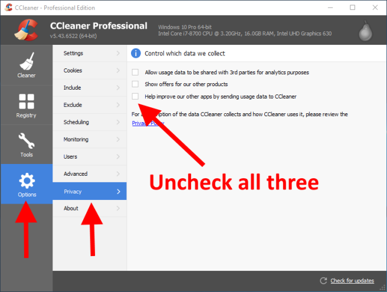

CCleaner
CCleaner, developed by Piriform, is a utility program used to clean potentially unwanted files and invalid Windows Registry entries from a computer.
Spyware Level: EXTREMELY HIGH
CCleaner is spyware that collects your personal information to advertise to you. It also sells your information to third parties so that they can advertise to you. It collects a huge amount of very personal information, like your physical location. CCleaner uses the technique of privacy policy obfuscation where it provides one privacy policy for every single product its company offers, making it more difficult to know what parts of the privacy policy apply to which program.
CCleaner collects and sells user information to advertisers
CCleaner clearly shows in its privacy settings that it is collecting information about your computer and selling that information to advertisers:
Image Source: [2]
CCleaner tracks a huge amount of personal information
If we look at the privacy policy, we can see that CCleaner reports the following[3]:
- IP Address
- Unique User ID
- Operating System
- Other Avast Products installed
- physical location
Beyond this, CCleaner is integrated with the following spyware platforms, which all collect their own sets of information:
- Google Analytics
- Logentries
It would be very time-consuming to go through all of those privacy policies (especially because many of these are obfuscated), but it should be enough to understand that CCleaner is full of third party spyware, as well as first party spyware.
CCleaner sends you spam email
From the privacy policy[3]:
"When we collect your email address, we may market our other products and services to you. You may choose to unsubscribe from future email marketing by following the instructions in the email."
CCleaner tracks your physical location
According to the privacy policy, the CCleaner website tries to track your physical location.[3]
"Our websites use cookies to acquire data that may be used to determine your physical location via your Internet Protocol address (“IP Address”) and automated geolocation techniques, or to acquire basic information about the computer, tablet, or mobile phone that you use to visit us."
"location data" is also mentioned when talking about the information that CCleaner itself collects about its users.
Past Security Flaws
In the past, CCleaner has been compromised and backdoors have been added to it.[1]